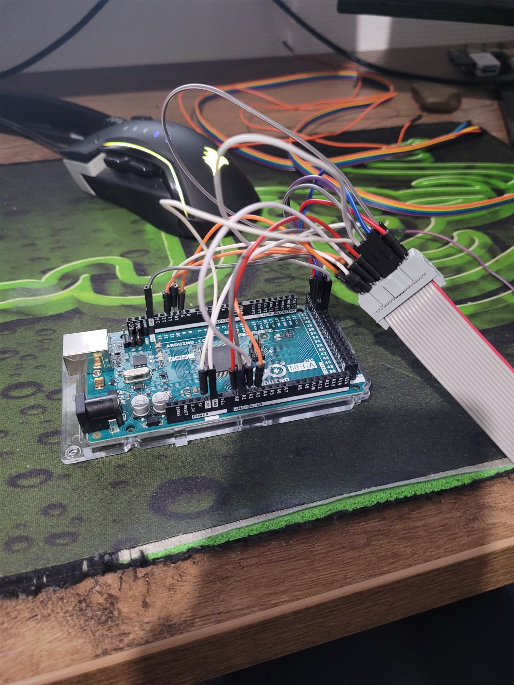
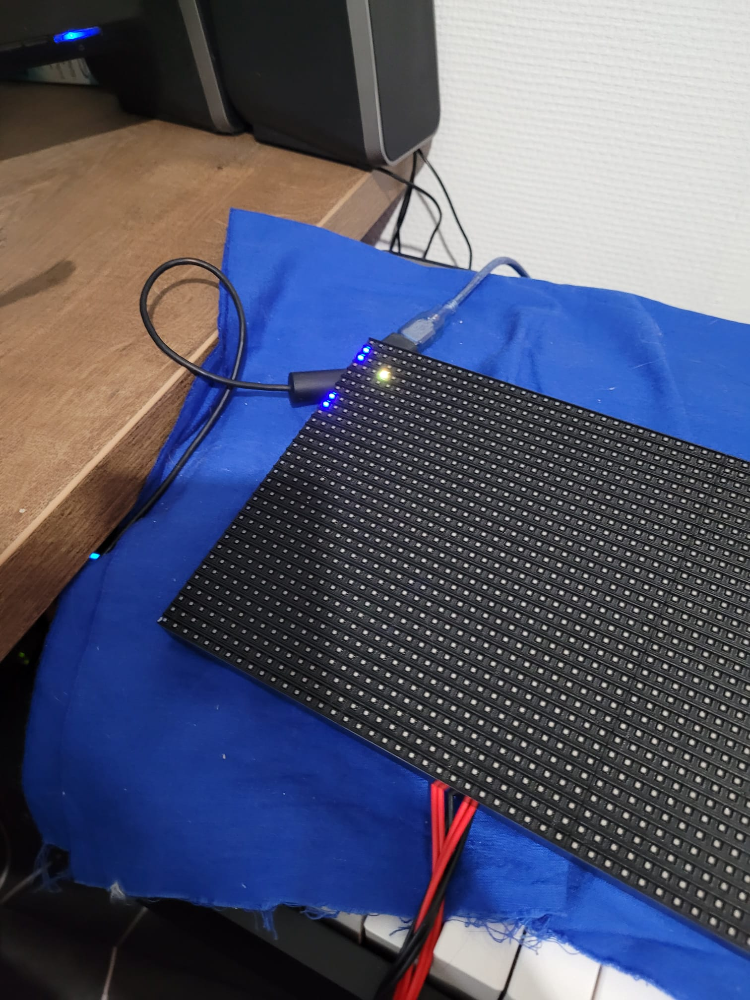
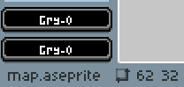
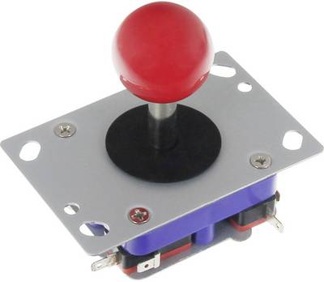
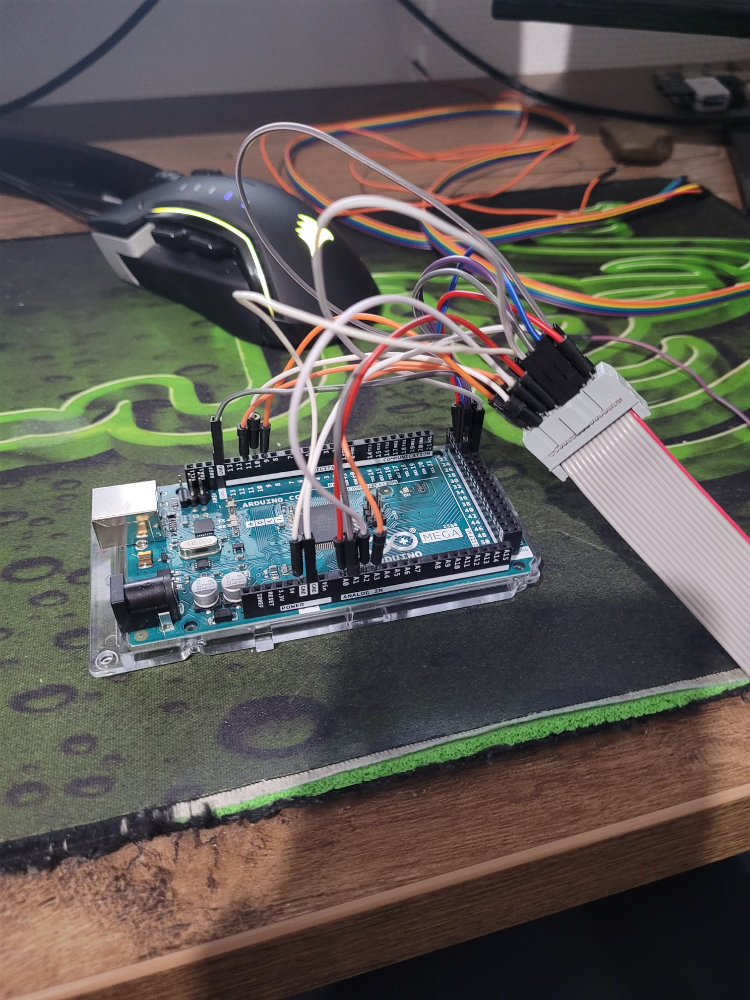
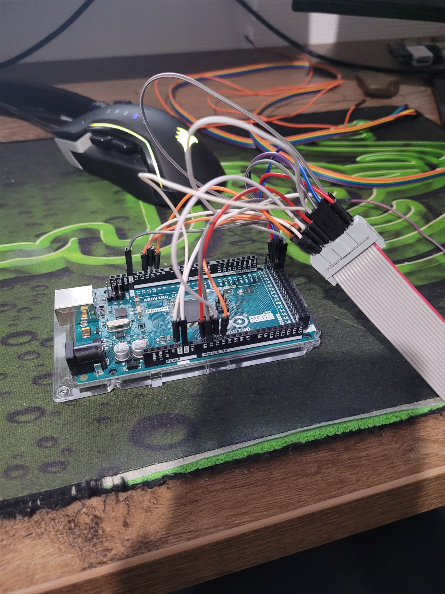

Wij hebben gekozen voor dit project omdat wij het leuk en interessant vonden hoe de Arduino Mega werkt. Wij houden wel
van een uitdaging en wilden dat graag uitzoeken. In het verslag op deze website leggen wij uit, welk pad wij hebben
doorlopen en welke problemen we hebben opgelost, om het eindresultaat – een goed werkend pacman spel – te bereiken.
Wij hebben voor dit project de Arduino Mega gebruikt. Dit is een programmeerbaar micro-controller bord waar je meerdere
soorten elektronica op kan aansluiten. De opties zijn bijna oneindig. Zo kun je met dit apparaatje een thermometer,
een weerstation of bijvoorbeeld een inbraakalarm maken. Ook hebben wij een 64x32 led panel gebruikt.
Hierop kunnen we alle pixels bedienen. De documentatie van het led panel is erg slecht, dus hebben we bijna alles
zelf moeten uitzoeken. Ook hebben we nog andere spullen gebruikt. Hier later meer over.
Het project
Testen
Voordat we begonnen aan dit project wisten we nog helemaal niks over de Arduino. Mellon had al ervaring met C++, dus
daardoor kon Mellon het best snel. Voordat we echt konden beginnen, zijn we eerst wat dingen gaan testen omdat we nog
niet heel veel wisten.
Het eerste wat wij probeerden was heel simpel. Een programma schrijven om een lampje op een breadboard aan te laten gaan.
Dit was de opstelling die wij hadden gemaakt:
Hier loopt er constant stroom door het knopje heen. Pas als het knopje wordt ingedrukt, loopt er stroom door naar de Arduino.
De stroom loopt dan door het knopje naar de Arduino waar het is aangesloten op een Digital Pin. Hieruit kan de Arduino een hoog en een laag signaal lezen. Hoog als er stroom inloopt
en laag als dat niet zo is.
Hierdoor kan je gemakklijk in de Arduino een simpele code scrijven om weer op een andere pin stroom weg te laten voeren.
void setup() // code die maar 1x wordt uitgevoerd
{
pinMode(2, INPUT); // luister op pin 2 voor signalen
pinMode(12, OUTPUT); // output signalen op pin 12
digitalWrite(12, LOW); // zet de output op een laag signaal
}
void loop() // blijft oneindig lang runnen
if (digitalRead(2) == HIGH) { // als pin 2 een signaal binnenkrijgt doe ->
digitalWrite(12, HIGH); // zend een hoog signaal uit op pin 12
delay(10); // wacht 10 ms
digitalWrite(12, LOW); // stop met signaal geven op pin 12
}
delay(10); // wacht 10 ms
}
Deze kleine test lijkt op het oog niet belangrijk maar heeft
wel goede kennis opgeleverd. Later hebben we dit namelijk nog nodig.
De setup
Dylan noemde het spaghetti. Het is namelijk een grote bende vol met draadjes, maar toch was het ons gelukt om dit bord
aan te sluiten. Alle draadjes moesten in een adapter worden gestopt en daarna op de juiste manier aan de
Arduino worden aangesloten.

In onze code zag het er wat rustiger uit. Naast deze code en de ingewikelde draadjes was dit de hele setup van ons
project.
#include <RGBmatrixPanel.h> // de driver voor het Led Panel
// deze stukjes code zijn voor de driver zodat het met het bord kan communiceren
#define CLK 11
#define OE 9
#define LAT 10
#define A A0
#define B A1
#define C A2
#define D A3
RGBmatrixPanel matrix(A, B, C, D, CLK, LAT, OE, false, 64); // vertel tegen de driver op welke
// pin ze wat kunnen vinden
Hierna hebben we ook nog wat testjes gedaan met het bord. We hebben een paar van de functies getest op het bord.
Het was niet heel bijzonder maar we hebben hier wel wat van geleerd.

De controller maken
Eerder vertelde wij over het maken van een knopje die een lampje aan doet. Wat wij daarvan hebben geleerd,
is dat het heel erg belangrijk is om een weerstandje te zetten op de kant waar de stroom heen gaat lopen. Dit zorgt
ervoor dat de Arduino beter het echte signaal op pakt en het zwakkere signaal negeerd. Dit zorgt voor naukeurigere
lezingen van de Arduino. Dit heet 'lekstroom'. Er loopt namelijk altijd wel een heel klein beetje stroom door het
knopje en daardoor zal de Arduino ALTIJD een signaal opvangen, ondanks de knop wordt ingedrukt.
Dit is hoe wij de controller hadden gemaakt. Er zijn 4 buttons op volgorde van: links, beneden, rechts, boven.
Dit hebben wij gemaakt voor het testen. Later in het project sluiten wij er een joystick op aan.
pinMode(2, INPUT); // luister naar input links
pinMode(3, INPUT); // luister naar input beneden
pinMode(4, INPUT); // luister naar input rechts
pinMode(5, INPUT); // luister naar input boven
Dit was alles wat nodig hadden en wat wij gemaakt hadden voordat wij aan het daadwerkelijke project waren begonnen.
De code
Dit deel is verdeeld in allemaal kleine stukjes omdat het een hele lange code is. Wij vinden het belangrijk om alles
goed uit te leggen.
matrix.X
Aan het begin van dit project wisten we nog niet zo veel over hoe we alle functies in de driver konden gebruiken.
Daarom zijn we begonnen met wat kleine dingen eerst uitproberen. Zo kwamen we er achter dat de driver een aantal
functies had.
matrix.width() // geeft de breedte van de matrix
matrix.height() // geeft de hoogte van de matrix
// de matrix begint met tellen vanaf 0
// de matrix is 64x32 dus begint op x=0 tot x=63 en y=0 tot y=31
// dus de uitkomst van matrix.width() = 63 en van matrix.height() = 31
matrix.Color333(7, 0, 7) // paars
// verteld tegen de Arduino welke kleur iets moet worden. Het is een RGB led bord
// dus 7,0,0 wordt rood en 0,7,0 groen enzovoort
matrix.drawPixel(x, y, matrix.Color333(7, 0, 7));
// tekent een pixel op het bord op plek x y met een kleur paars
matrix.drawRect(x1, y1, x2, y2, matrix.Color333(0, 0, 7));
// tekent een vierkant op plek x1 y1 tot x2 y2 met een kleur blauw
matrix.drawLine(x1, y, x2, y, matrix.Color333(0, 0, 7)); // tekent een lijn op het bord
// van x1 y1 tot x2 y2
matrixMap
Omdat wij een spel maken waarin er pixels moeten bewegen op een soort grid, is het nodig om een lijst te maken
met de coordinaten van alle objecten in het spel. Namelijk: voedsel, tegenstanders, muren en natuurlijk de speler. Zoals
wij al verteld hebben start het bord met tellen op x=0 en y=0.
Die coordinaten staan helemaal links boven in. Hieruit volgt:
int matrixMap[64][32];
int enemyMap[64][32];
// Dit stukje code maakt een lijst aan waarin waardes worden opgeslagen als matrixMap[x][y] = 0.
// stel dat wij de code matrixMap[0][3] = 1 nu zouden intypen, dan is dit hoe de
// map er uitziet. Dus op rij 1 en hoogte 4 vanaf links boven:
//
// 0,0,0,0,0,0,0,0,0,0,0,0,0,0,0,0,...
// 0,0,0,0,0,0,0,0,0,0,0,0,0,0,0,0,...
// 0,0,0,0,0,0,0,0,0,0,0,0,0,0,0,0,...
// 1,0,0,0,0,0,0,0,0,0,0,0,0,0,0,0,...
// 0,0,0,0,0,0,0,0,0,0,0,0,0,0,0,0,...
// ...
Deze hele map is bedoelt voor later in het project als wij de muren, het voedsel, de enemys en portalen gaan maken.
Helaas liepen wij tegen een probleem aan. Op de Arduino kan je maar een bepaalde hoeveelheid geheugen gebruiken.
De map die wij net maakten heeft 64x32 layout. Dus zijn er totaal 2048 getallen opgeslagen. Dat dan weer x2 omdat
het 2 mappen zijn. Dat zorgt er voor dat we meer dan 80% OVER het toegestane geheugen zitten.
INT = is de normale manier om een cijfer te laten zien in code. Maar deze neemt in verhouding
tot de BYTE veel ruimte in beslag.
BYTE = bestaat uit 4 bits. Bits zijn de kleinste stukjes code in een computer. Letterlijk een 0 of
een 1. Deze nemen dus veel minder ruimte in beslag.
Dit zorgde ervoor dat we meer dan genoeg ruimte over hadden voor de rest van het project.
Herschrijven van sommige matrix.X functies
Om het coderen later veel makkelijker te maken creeren we hier functies om een lijn te maken.
Later kunnen we dan eenvoudig de muren incoderen zonder al deze regels handmatig te moeten typen. Ook zie je in deze code
dat er waardes naar 1 worden gezet in de matrix mappen.
void drawlineH(int x1, int x2, int y) { // teken een horizontale lijn
int len = x2 - x1 + 1; // bereken de lengte van de lijn
for (int i = 0; i < len; i++) { // herhaal de volgende code tot elke pixel in de lijn in de
// matrixmap staat
matrixMap[x1 + i][y] = 1; // zet de locatie van de pixel in de matrixMap naar 1 (muur)
enemyMap[x1 + i][y] = 1; // zet de locatie van de pixel in de enemyMap naar 1. (muur)
}
matrix.drawLine(x1, y, x2, y, matrix.Color333(0, 0, 7));// teken de lijn op het bord met de
// matrix.X funcite
}
void drawlineV(int y1, int y2, int x) { // teken een verticale lijn
int len = y2 - y1 + 1; // bereken de lengte van de lijn
for (int i = 0; i < len; i++) { // herhaal de volgende code tot elke pixel in de lijn in de
// matrix map staat
matrixMap[x][y1 + i] = 1; // zet de locatie van de pixel in de matrixMap naar 1. (muur)
enemyMap[x][y1 + i] = 1; // zet de locatie van de pixel in de enemyMap naar 1. (muur)
}
matrix.drawLine(x, y1, x, y2, matrix.Color333(0, 0, 7));// teken de lijn op het bord
// met de matrix.X functie
}
Speler maken
Nadat we de muur functies af hadden gingen we werken aan een bewegende pixel op de Led matrix.
Hiervoor konden we simpel matrix.drawPixel(x,y,Color333) gebruiken. In elk spel zit een klok en die
update het spel. Hievoor gebruikten wij een while loop. Als de speler dood gaat door een enemy dan wordt de
variabele gameStarted naar False gezet en eindigt de loop.
while(gameStarted){// game code die elke frame moet worden uitgevoerd...
// code...
delay(80); // 80 miliseconde delay voor beter kwaliteit van het spel
}
Omdat we de locatie van de speler bij moeten houden maken we hier variabelen voor. De speler begint nu op plek x=1 y=1.
int playerLocationX = 1;
int playerLocationY = 1;
Nu kunnen we alles combineren:
while(gameStarted) {
if(digitalRead(2) == HIGH) { // knopje naar links wordt ingedrukt
if(playerLocationX - 1 > 0 ) { // als de speler 1 naar links gaat, is de speler dan niet
// buiten de matrix?
matrix.drawPixel(playerLocationX, playerLocationY, matrix.Color333(0, 0, 0));
// zet de pixel van de oude locatie uit want Color333(0,0,0) is geen rood, groen of blauw lichtje.
playerLocationX--; // update playerLocationX met -1 want -1 is naar links.
}
}
// hetzelfde voor input rechts, beneden, boven...
// ...
matrix.drawPixel(playerLocationX, playerLocationY, matrix.Color333(7, 7, 0));
// teken de speler nadat een klok cyclus voor bij is.
delay(80);
}
Op deze manier kan de speler alle kanten op bewegen. Maar hier ontdekten wij het probleem dat de speler door de muren
heen kan bewegen. Hiervoor hebben we een aparte functie gemaakt. Een BOOL staat voor TRUE of FALSE
Deze kunnen we dan in onze speler move gebruiken om te testen of de volgende zet geen muur is.
bool nextMovePossible(int x, int y) { // check of de volgende zet niet een muur is
if (matrixMap[x][y] == 1) { // is het geen muur?
return false; // wel muur
}
return true; // geen muur
}
Hieruit volgt:
if(digitalRead(2) == HIGH) { // als de speler naar links wil bewegen
if(playerLocationX - 1 > 0 && nextMovePossible(playerLocationX - 1, playerLocationY)) {
// controleert dus of de speler niet buiten de matrix is EN (&&) of de volgende zet geen muur is.
matrix.drawPixel(playerLocationX, playerLocationY, matrix.Color333(0, 0, 0));
playerLocationX--;
}
}
// voor boven, benden en rechts hetzelfde
// ...
Op deze manier kan de speler vrij bewegen. Het kan niet door muren heen en ook niet buiten de matrix komen.
Puntensysteem
Wij hebben lang nagedacht over de manier hoe we punten kunnen geven aan de speler. Je kan bijvoorbeeld punten
geven voor hoelang de speler overleefd of hoeveel tegenstanders je opeet. Maar wij zijn toch gegaan voor het
standaard puntensysteem van pacman. Punten krijgen door middel van voedsel op te eten.
Hiervoor leek het ons handig om een drawFood() functie te maken.
void drawFood(int x, int y) { // teken voedsel op plek x y
matrixMap[x][y] = 2; // het punt in de matrix map zetten naar 2. Dat betekend voedsel
matrix.drawPixel(x, y, matrix.Color333(7, 0, 7)); // de pixel tekenen
}
Ook hebben we een manier nodig om de score te laten zien. Op het led panel hebben we een plekje vrijgehouden om de score
laten zien. Ook hiervoor hebben we een functie gemaakt. Elke keer als er weer een klokcyclus voorbij is, moet deze functie
worden uitgevoerd.
void drawScoreLine(int totalScore){
if (totalScore == 30)
{
gameStarted = false; // als je 30 punten hebt, win je en stopt het spel
}
else{
if(totalScore > 0){ // teken een lijn pas als de score groter is dan 0
matrix.drawLine(62, 30, 62, 30-totalScore+1, matrix.Color333(7, 0, 7));
// teken een paarse lijn als score lijn
}
}
}
Een score lijn is erg leuk maar als je geen voedsel kan op eten is het erg lastig om het spel te winnen. Ook dit moet elke
klokcyclus worden gechecked zodat het voedsel bij de scorelijn kan worden toegevoegd. Hiervoor hebben we weer een functie
gemaakt:
bool isOnFood(int x, int y) {
if (matrixMap[x][y] == 2) { // is de speler op voedsel?
return true; // ja
}
return false; // nee
}
In onze game loop krijgen we vervolgens:
while(gameStarted){
// ...
if (isOnFood(playerLocationX, playerLocationY)) { // is de speler op voedsel?
matrixMap[playerLocationX][playerLocationY] = 0; // haal het voedsel uit de matrix. Anders kan je
// het meerdere keren opeten
playerFoodCount++; // +1 voedsel
}
drawScoreLine(playerFoodCount); // update score lijn
// meer code ...
}
De map
Het maken van de map nam het grootse deel van onze tijd in beslag. Heel veel tijd waren we kwijt aan het uitzoeken
van de meest efficiente manier om code om te zetten naar de led lampjes.
Als eerst hebben wij geprobeerd om tekst om te zetten naar pixels. Hier wilden wij dan over heen gaan met een loop
die text omzet naar een pixels op het led bord.
Hier zijn de lege ruimtes de plek waar de speler door heen kan en het @ symbool was dan de muur. Deze spiegelen
we dan ook aan de andere kant en dan heb je een map. Helaas was dit moeilijker dan dat we in eerste instantie dachten.
Wat niet lukte met letters hebben we ook nog eens geprobeerd met cijfers. Maar helaas geen geluk. Op dit
moment beseften we dat wij de moeilijke manier moesten gaan doen. We moesten de matrix functies gaan gebruiken en de
matrix map.
Eerst zijn we begonnen met een design maken zodat we de coordinaten makkelijk konden zien. Natuurlijk hebben wij
het design gebaseerd op die van de orginele pacman map.
Het programma
'Aseprite' kwam hier goed van pas. Dit is eigenlijk een pixelart programma maar er waren een paar functies die
ons heel erg goed van pas kwamen.
Een van die handige functies waren de coordinaten links onderin. Hierdoor konden we heel simpel zien op welke
plek bepaalde lijnen moeten komen. Hierdoor hebben we de map redelijk snel kunnen maken. In totaal zijn het er
meer dan 110 lijnen aan code voor 1 map.

Nadat we de map hadden ingeprogrammeerd hebben we het voedsel er in gezet. Eerst hebben we alles uitgestippeld
in het design. Daarna hebben we een soort rondes gemaakt. Elke ronde spawnen er 5 stukjes voedsel, als je elk stukje
op hebt komen er weer 5 nieuwe op het scherm. Tot je natuurlijk de scorebar vol hebt, want dan heb je gewonnen.
if (clockCount == 50){wave(0);}; // clockCount wordt gebruikt omdat
//anders het voedsel eerder spawned dan de map
if (playerFoodCount == 5){wave(1);};
if (playerFoodCount == 10){wave(2);};
if (playerFoodCount == 15){wave(3);};
if (playerFoodCount == 20){wave(4);};
if (playerFoodCount == 25){wave(5);};
if (playerFoodCount == 30){handleWin();};
handleWin() zorgt ervoor dat alles afsluit en het spel stopt. De wave(x) functie
zorgt voor het voedsel dat elke nieuwe ronde moet spawnen.
Enemies
Eerst dachten wij aan een zoek algoritme. In JavaScript had Mellon dit makkelijk gekunt maar in
de taal waarin we dit project hebben geschreven wilde het maar niet lukken. We hebben
Dijkstra's algoritme
(wikipedia) geprobeerd en ook
Breadth First Search (BFS)
(wikipedia) maar, helaas waren ze beide niet gelukt.
Daarom zijn we met een eigen oplossing gekomen. We hebben handmatig op elk punt van de map de
kruisingen aangegeven in de enemyMap. Hierdoor kunnen we elke game klok checken of de enemy op een
kruising staat waarbij we ze dan een random richting in kunnen sturen.
Hiervoor hebben we een paar variablen moeten aanmaken. We wilden 4 enemies hebben waarvan we alle
coordinaten en de richting moesten opslaan.
//enemy info
int enemyLocationX = 0;
int enemyLocationY = 0;
int enemyDir = 0; // 0 naar boven 1 naar rechts 2 naar beneden 3 naar links
int enemyLocationX2 = 0;
int enemyLocationY2 = 0;
int enemyDir2 = 2;
int enemyLocationX3 = 0;
int enemyLocationY3 = 0;
int enemyDir3 = 1;
int enemyLocationX4 = 0;
int enemyLocationY4 = 0;
int enemyDir4 = 2;
Na deze variablen aan te hebben gemaakt kunnen we de benodigde functies maken. Eerst
maken we een functie waar we een random getal krijgen die we kunnen verbinden aan een richting.
0 = boven
1 = rechts
2 = beneden
3 = links
Dat gaan we doen met deze code:
long randomNumb = random(0,4);//random number tussen 0-3
if (randomNumb == 0 ) {enemyDir = 0;}
else if (randomNumb == 1) {enemyDir = 1;}
else if (randomNumb == 2) {enemyDir = 2;}
else if (randomNumb == 3) {enemyDir = 3;}
Daarna kunnen we een handleEnemyMovement functie maken waardoor we elke game klok de enemie locatie
kunnen updaten. Ook gebruiken we een zelfde soort functie als die van de speler;
nextMovePossible. Deze kunnen we ook gebruiken voor de enemy.
void handleEnemyMovement1(){
if(enemyDir == 0) { // enemy gaat naar boven
if (nextMoveEnemy(enemyLocationX, enemyLocationY - 1)) // check of de volgende zet mogelijk is
{
matrix.drawPixel(enemyLocationX, enemyLocationY, matrix.Color333(0,0,0)); //zet de vorige pixel uit
if (matrixMap[enemyLocationX][enemyLocationY] == 2) // is de vorige pixel voedsel?
{
drawFood(enemyLocationX,enemyLocationY); // teken op die plek weer voedsel terug
}
enemyLocationY--; // verander de coordinaten van de enemy
}
}
else if(enemyDir == 1) { // enemy gaat naar rechts
if (nextMoveEnemy(enemyLocationX + 1, enemyLocationY)) // check of de volgende zet mogelijk is
{
matrix.drawPixel(enemyLocationX, enemyLocationY, matrix.Color333(0,0,0)); //zet de vorige pixel uit
if (matrixMap[enemyLocationX][enemyLocationY] == 2) // is de vorige pixel voedsel?
{
drawFood(enemyLocationX,enemyLocationY); // teken op die plek weer voedsel terug
}
enemyLocationX++; // verander de coordinaten van de enemie
}
}
// ... zelfde code voor elke richting
// ...
if (enemyMap[enemyLocationX][enemyLocationY] == 2) // als de volgende zet een kruispunt is verander
// de richting
{
long randomNumb = random(0,4);
if (randomNumb == 0 ) {enemyDir = 0;}
else if (randomNumb == 1) {enemyDir = 1;}
else if (randomNumb == 2) {enemyDir = 2;}
else if (randomNumb == 3) {enemyDir = 3;}
}
}
// ... zelfde voor de andere enemies
Moeilijkheidsgraad
Toen wij het spel gingen spelen om te testen was het spel erg lastig. Maar we wilden niet te
veel weg halen uit het spel. Daarom hebben we besloten een moeilijkheidsgraad te maken. Easy en Hard.
Natuurlijk moet je ook de moeilijkheidsgraad kunnen kiezen dus hebben we er ook een menu bij gemaakt.
De code hiervan is niet zo interessant. Maar we leggen het wel uit.
In onze game loop hebben wij standaard 2 enemies een random locatie gegeven. Als de game in het start
menu op Hard staat, krijgen de andere 2 enemies ook random locaties. Anders worden ze niet ingeladen en staan ze vast.
Joystick
Nadat we de hele code klaar hadden wilden wij onze controller gaan veranderen. Wij hadden tot nu toe
alleen nog maar het breadboard met wat buttons en heel veel draadjes. Dit is natuurlijk niet echt fijn
om mee te spelen dus hebben we aan Meneer Gnodde gevraagd of hij een joystick kon regelen.

Aan deze joystick zitten 8 metalen lipjes waar een gaatje in zit. Voor bijde X en Y axis zit een plus
en een min lipje. Meteen zag Mellon al hoe dit systeem werkte. De joystick zit in een soort plusje van
plastic waardoor de joystick naar links, rechts, boven en beneden kan. Als de joystick naar rechts wordt
geduwt, gaat de onder kant van het stokje van de joystick naar links. Deze duwt tegen
een metaal plaatje waardoor er een gesloten stroom kring ontstaat. We kunnen hetzelfde concept als bij de buttons toe passen, want het doet in principe het zelfde als de
knopjes die we eerst hadden.
Mellon heeft thuis snoertjes aan de metalen lipjes gesoldeerd en daarna in de juiste gaatjes in de arduino
gestopt. Hierdoor hebben we een joystick verbonden aan de arduino.
Conclusie
We hebben in dit project veel geleerd. We hebben veel over de programmeertaal geleerd en
over elektronica. We hebben veel plezier gehaald uit het
onderzoek doen naar de arduino en naar verschillende manieren om bepaalde problemen op te lossen.
 
